The first twenty seconds decide whether the judge cares. Do not open with "blind people". Open with a moment everybody knows, then arrive at the people who need it most. The product is built first for blind and low-vision fans; the problem is wider than that.
| Who | The moment | What they do today |
|---|---|---|
| A driver, a cook, someone with their hands full | "Did we score?" | Stop, unlock a phone, open an app, wait for it to load, scroll. |
| A person in a meeting or on a train, eyes elsewhere | "What's the score?" | Search, tap, squint, close. |
| Someone who just arrived late at the match | "What did I miss?" | Scroll a text feed back to the start. |
| A blind or low-vision fan | All of it: score in a corner, line-ups on a graphic nobody reads out | Rely on someone beside them, or miss the match. |
Do not say or show: a number of users, a claim of testing with blind users beyond what the team will state first-hand, a statistic about blindness or about phone use that is not in the repository, a claim that it runs on real Alexa+.
| Time | On screen | Narration |
|---|---|---|
| 0:00 to 0:20 | Three quick cuts of faces (or silhouettes): hands in a kitchen, a car dashboard, a person with a white cane. Shoot them yourself: no stock footage, no car badge or brand in frame. Then the simulator's idle eye. | The problem, as above. |
| 0:20 to 0:32 | Terminal showing MCP endpoint: http://127.0.0.1:8765/mcp, then the page (01-go-live). | "Sideline is an MCP server: thirty tools, live data, and a memory of what each listener has heard. This page only simulates Alexa+. Everything you see is the MCP." |
| 0:32 to 1:20 | Football, live voice. See section 3, questions 1 to 6. | One short sentence in each gap. Silent while she thinks. |
| 1:20 to 1:48 | "Any game" montage. See section 4. | "Same server. Different game." |
| 1:48 to 2:16 | The explainer animation (ANIMATION_PROMPT.md), 28 s of it. | The animation narration. |
| 2:16 to 2:30 | Press Alt+D: the Dev log. Scroll the last answer: tool, arguments, feed requests, timings. | "Every answer is traceable: which tool, which arguments, how long, how many feed requests." |
| 2:30 to 2:48 | Plain card, white on dark, no logos: the repository address; "68 offline test suites, 28-entry friction log, routing 77/79 on Nova Pro". Then the three service names as text. | "Built on Amazon Bedrock, Polly and DynamoDB. The tests, the friction log and the limits are in the repository. It isn't on real Alexa+ yet, because that tooling is partner-only. It is built to be hosted and connected when it is." |
Leave 5 seconds of slack. If you run long, cut the Dev log shot or part of the montage before a football question.
Everything here is spoken aloud with hands off the keyboard. Use the real match you chose on the day (make next-matches; a finished match from
yesterday is fine and safest). The wording of the answers is whatever the data says that day: if one is not what you want, record that question again.
The names below are from the verified run (Lyon 3-2 Crystal Palace, Europa League, 15 October 2026); swap in the day's match.
| # | Say | You should see and hear | Gap line |
|---|---|---|---|
| 1 | "Follow Lyon." | One sentence with the score. The strip appears at the top with the date, the sport and the clock. The eye stays clear. | "I just name a team." |
| 2 | "Who scored?" | The goals, in order, with the assists. | "Straight facts." |
| 3 | "Who assisted Pino's goal?" | A single sentence naming the assist (this used to answer about the wrong goal; it is fixed and tested). | "It answers the question I asked." |
| 4 | "Show me the line-ups." | The pitch (10-lineups): home left, away right, shapes, goalkeepers, benches, the ground and the date above. | "A whole screen from one sentence." |
| 5 | "My TV is about forty seconds behind." then "What's the score?" | It confirms the delay; the score holds back anything your picture hasn't shown. The timeline shows the live edge. | "It won't spoil a goal your TV hasn't shown." |
| 6 | (live match only) say nothing for about half a minute | Commentary starts by itself, a line or two at a time, if the feed has new lines (it waits 10 s after you last spoke, then checks every 12 s). Interrupt it with "stop". | "It keeps me posted, and I can interrupt." |
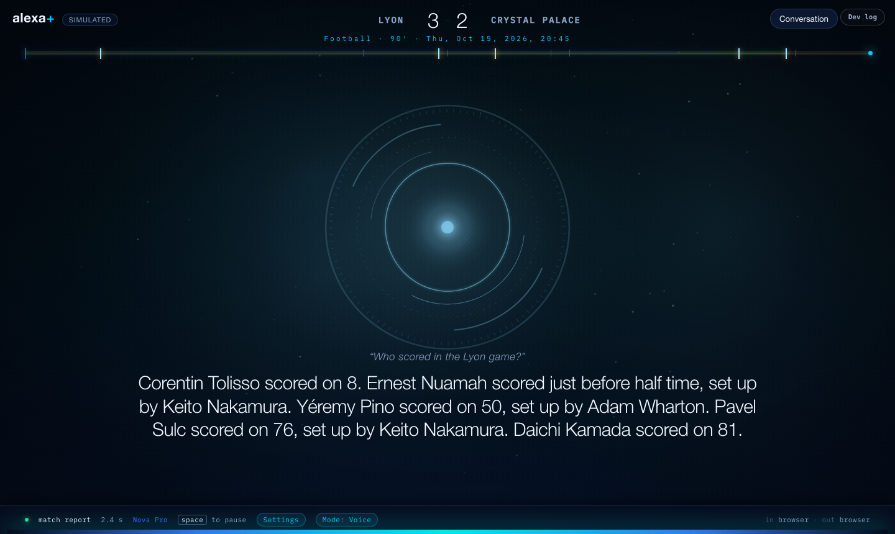
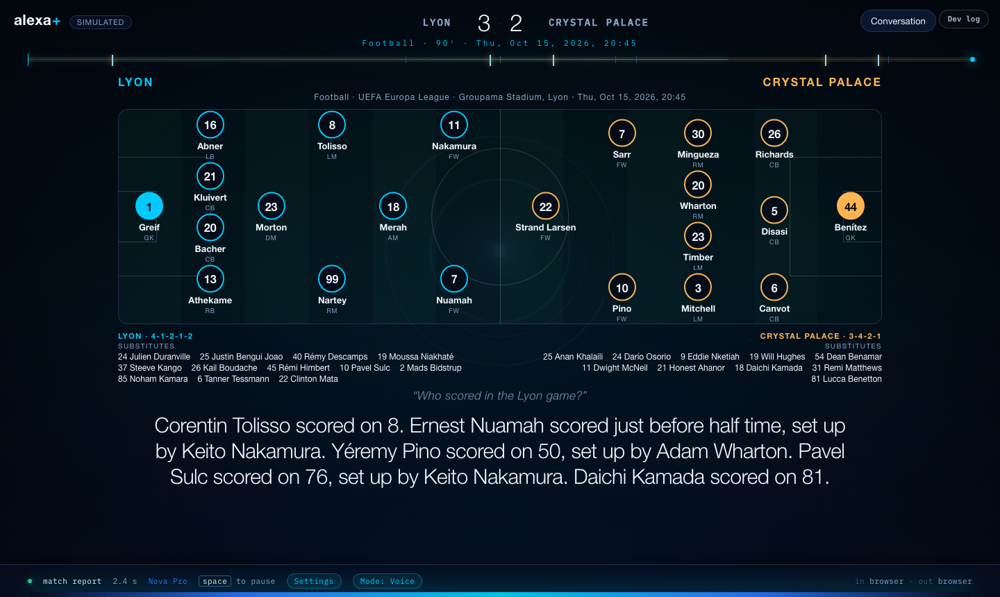
The creative idea: one voice, three games, three seconds each, and the screen changes its own words. A split screen with a small label
at the top left that types the sport ("Basketball", "American football", "Ice hockey"). The same eye, the same strip, the same question shape.
What changes is the clock: Q4, Final, P2, not 90′.
| Beat | Say | Shows |
|---|---|---|
| 0:00 (of the montage) | "Alexa, what happened in the Knicks game last night?" | 11-basketball-following: 122-120 Final, quarters on the bar, the leading scorers spoken. |
| 0:09 | "Who won the Broncos game?" | 13-american-football-following: 17-14 Final. |
| 0:18 | "What's the score in the Vegas game?" (if live) or "Who won the Dodgers game?" | Hockey or baseball, whichever is real that day. |
| 0:27 | "Show me the Knicks line-up." | 12-basketball-lineups: starters in big numbers, the bench under each side. |
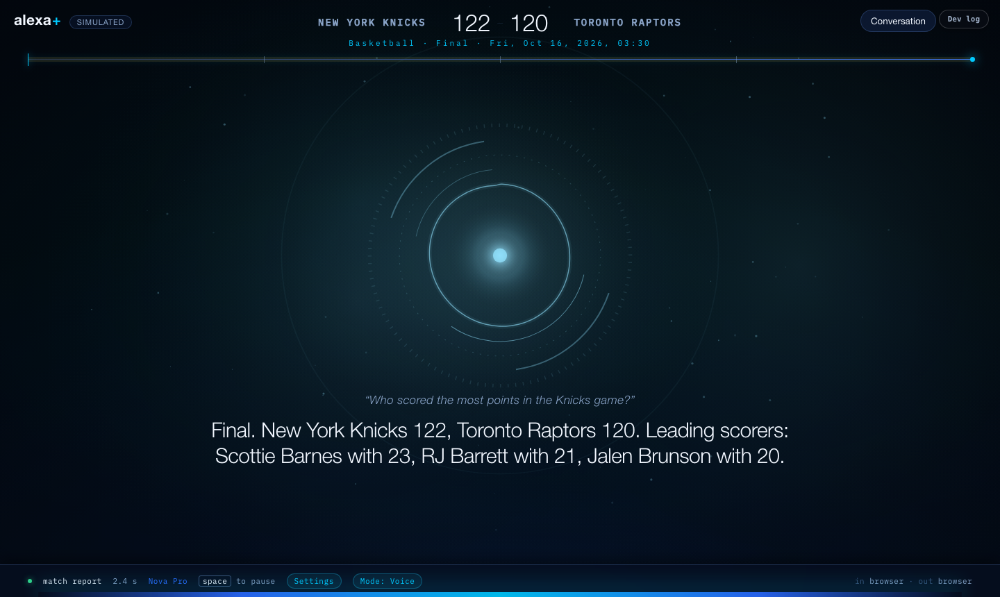
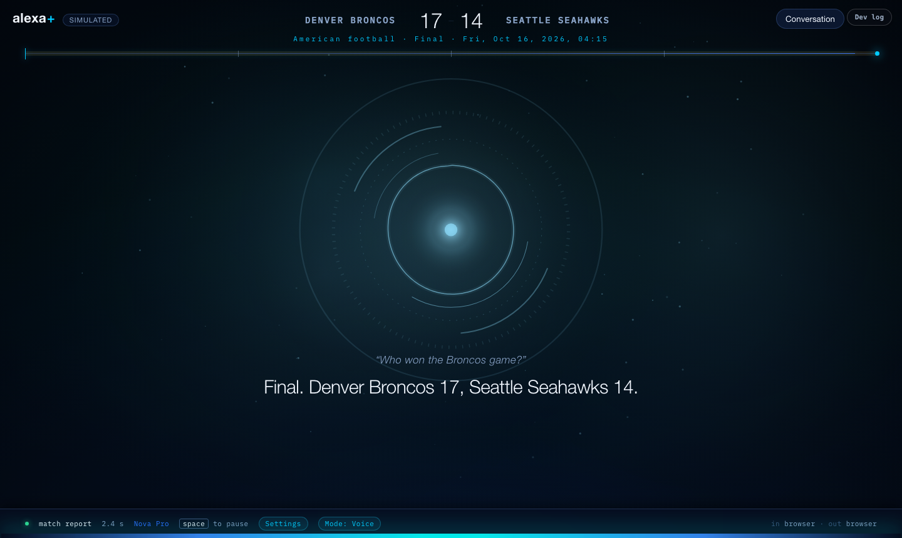
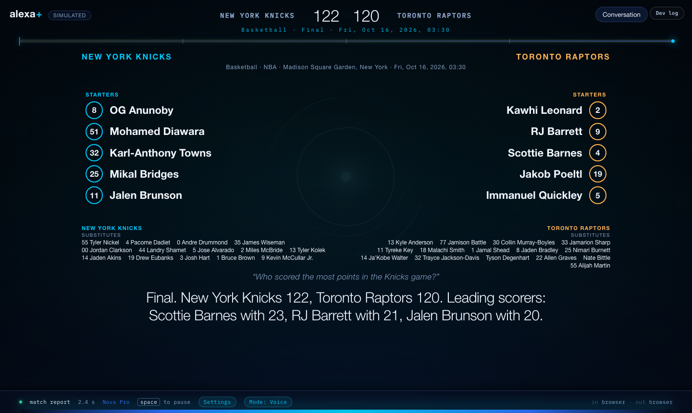
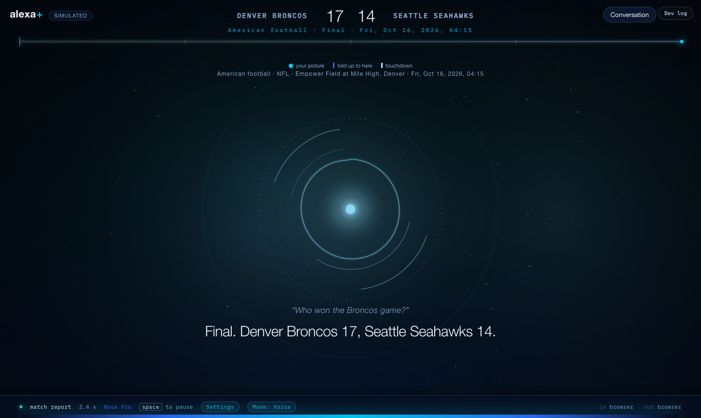
Honest limits to keep in mind (do not oversell): the screenshots use the real results above; sports other than football were tested with a smaller set of
questions (see docs/CURIOSITY_QA.md); NFL line-ups are often not published until close to the game; basketball has no commentary feed, so for those the commentary falls back to reading out events.
This is the part that shows the judges how it was built, in plain language. Generate it with docs/video/ANIMATION_PROMPT.md
(paste the prompt into Claude, attach the screenshots listed there, get one HTML file, screen-record it at 1080p).
content (words for the ear) and structuredContent (data for any screen).| Service | What it does in Sideline | Evidence |
|---|---|---|
| Amazon Bedrock | Amazon Nova Pro chooses tools and writes the catch-up (in the simulator); Mistral Voxtral and Amazon Nova Sonic turn speech into text. | Routing 77 of 79 phrasings on Nova Pro; docs/BEDROCK.md, docs/SPEECH.md |
| Amazon Polly | The voice, with word timings so the screen can follow along. | docs/SPEECH.md |
| Amazon DynamoDB | What each listener has been told, their TV delay, what they follow, and the event log. A write-through cache keeps it fast (about 340 ms per round trip from Mauritius). | docs/ARCHITECTURE.md, tests/test_dynamo_cache.py |
What is not on AWS yet: the server runs on a laptop today. The README's hosting steps are written but not yet tested on a hosted machine. Say "built to be hosted", never "hosted on AWS".
make test (should say "all suites passed"), python3 scripts/check_with_sdk.py in a virtualenv with mcp installed.make next-matches. A finished match from the last 24 hours is safest. Write down both team names and two players.lsof -iTCP:8765 -sTCP:LISTEN should print nothing, then make run and make sim.ANIMATION_PROMPT.md..env and any terminal that prints keys. Settings: leave defaults (the wake word is off, so she answers whatever she hears; commentary on).docs/SPEECH.md; a plain score can skip the model and come sooner).docs/HACKATHON.md ("Demo video"). Submit before the deadline: nothing can change after.| It happens | Do this |
|---|---|
| "Sorry, an error occurred" (the model throttled) | Wait 20 seconds, ask again. Keep the take; it shows the honest failure message. |
| She does not respond | Say it again once. If nothing, check the microphone permission and the Dev log (Alt+D) for "ignored (...)". |
| No live match | Use a finished match; skip commentary; say "when a match is in play, it keeps me posted". |
| The server will not start: "already running" | lsof -iTCP:8765 -sTCP:LISTEN, kill <PID>, start again, or SIDELINE_PORT=8766 make run. |
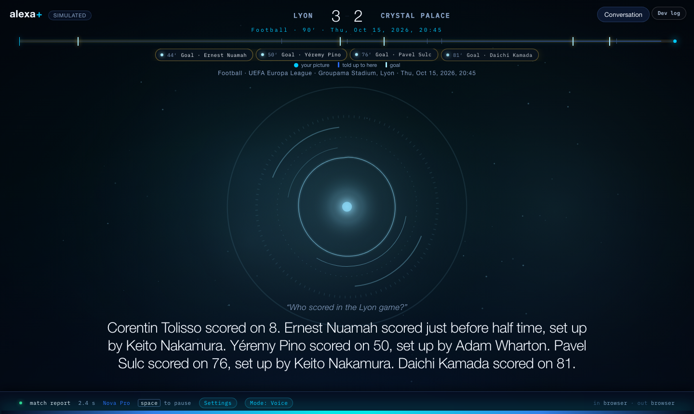
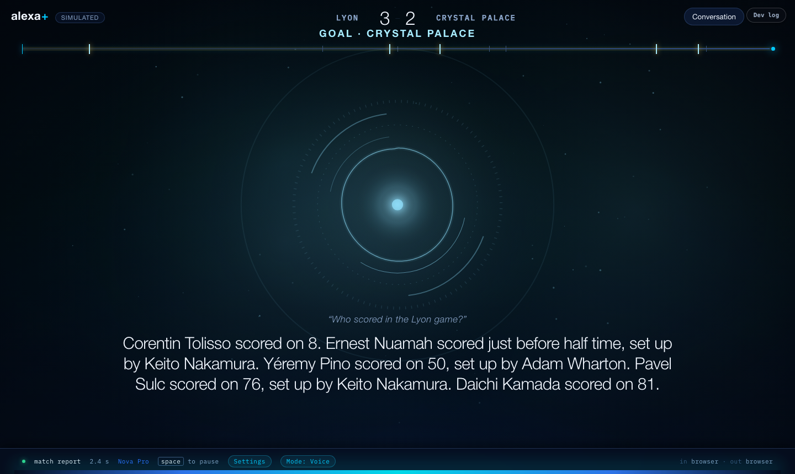
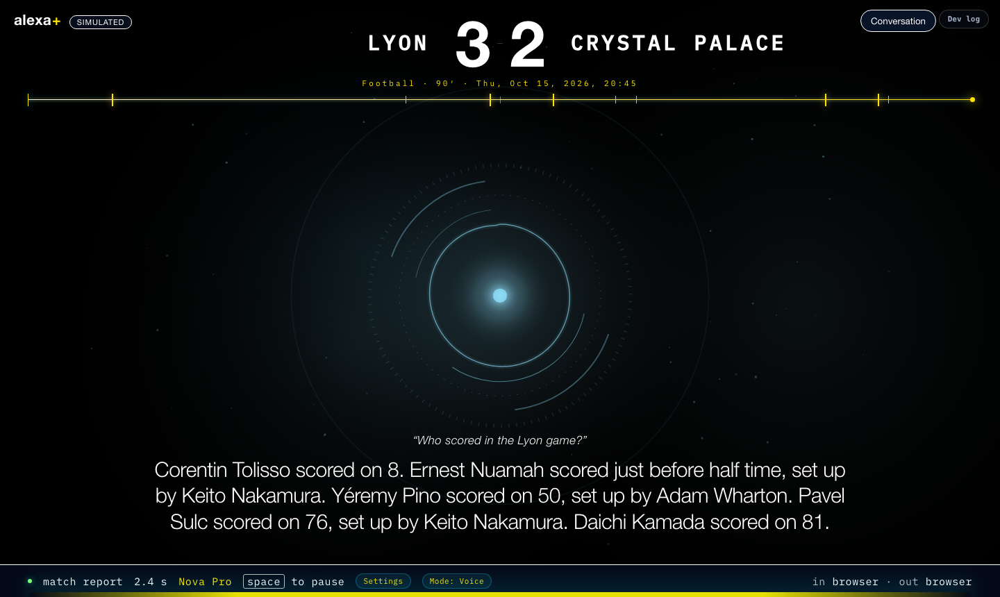
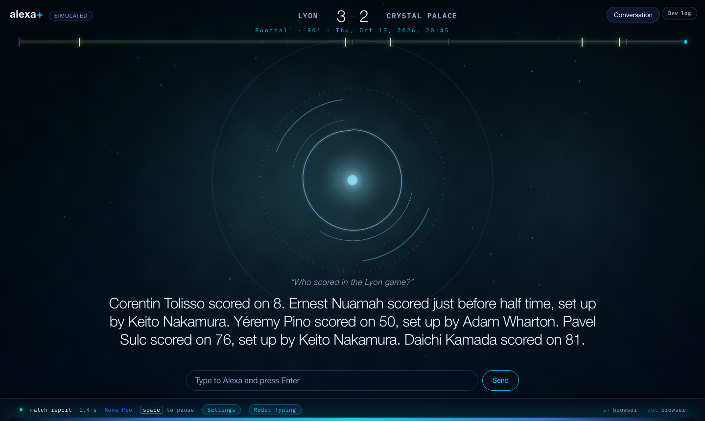
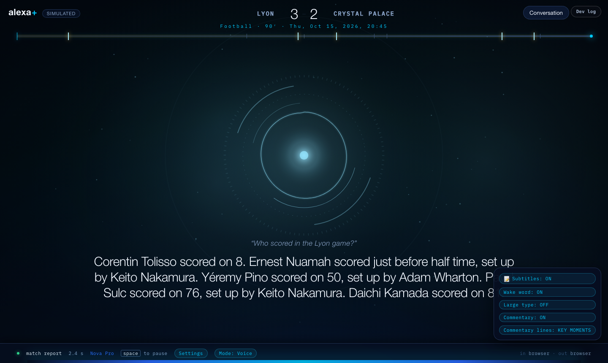
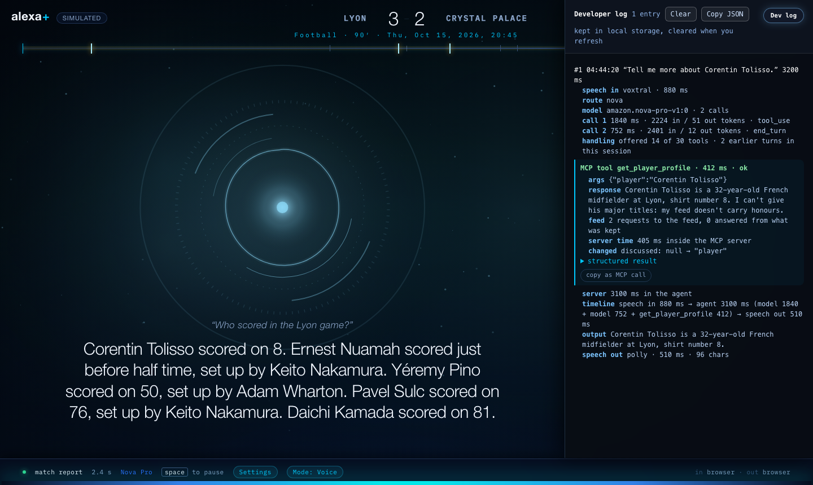
These screenshots were built from real results of 15 October 2026 in a preview copy of the page, not from the shipped page, and not on a real microphone.